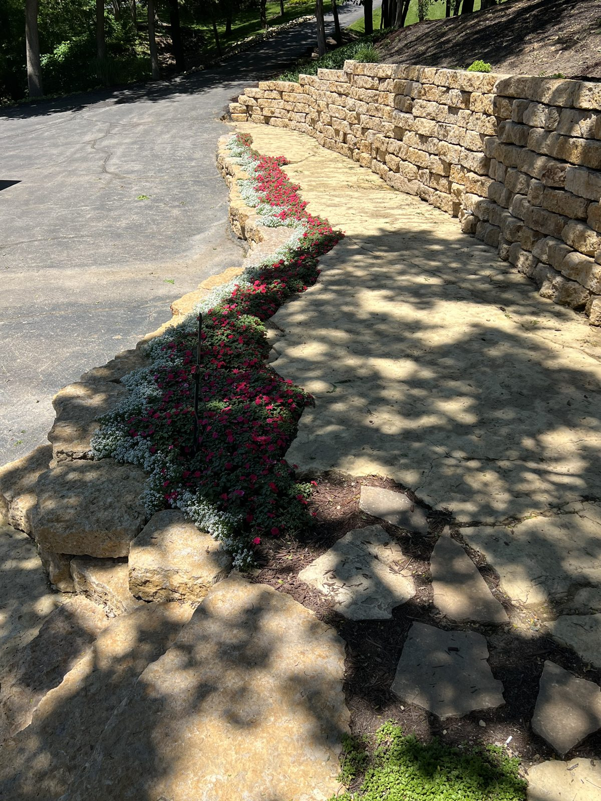

September 26, 2026 · New View Landscaping
When the weather warms up in spring, everybody wants their yard done at the same time. Schedules fill, material orders stack up and the ground has to thaw and dry out before most heavy work can start. The people who get the smoothest spring are usually the ones who did the thinking in fall.
Planning a landscape project takes longer than most people expect. There's the walk-through, then a design that fits how you actually use the yard, then decisions on materials, then a scope and a price you're comfortable with. Squeezing all of that in after the snow melts leaves little room to think things over, and rushed decisions are the ones people end up regretting.
Fall is also the best time to see how your yard really behaves. After a summer of rain and use, you know where water collects, where the grass keeps dying, which beds you ignore and which corner you never use. Those are the things a good design should solve, and they're a lot easier to point at now than to remember in April.
Some work can happen right away. Depending on the project, parts of it, like grading, planting trees and shrubs or building a retaining wall, can still be done while the ground is workable. Other parts, like a patio, are better saved for spring but benefit from having every decision already made, so the crew can start the day the ground allows.
Planning ahead also gives you room to phase a big idea. Not every project has to happen at once. A design done properly can be built in stages over a couple of seasons, so the first phase makes sense on its own and the later ones fit in without tearing anything back out.
If you've been thinking about a project, even loosely, a free estimate this fall costs you nothing and gives you a real starting point. You'll know what's realistic, roughly what it involves and what order makes sense, and you'll be first in line when spring arrives.
A full plan for your yard, then a crew that installs it right the first time.
Learn MoreMost people have never gone through a full landscape project before and don't know what to expect. Here's the actual sequence, from the first walk-through to the last plant going in the ground.
Every yard is different, so there's no honest flat-rate answer. Here's what actually moves the number up or down, so you know what you're looking at before you ask for a quote.
A retaining wall is only as good as what's underneath it. Here's what actually makes a wall hold for twenty years instead of five.